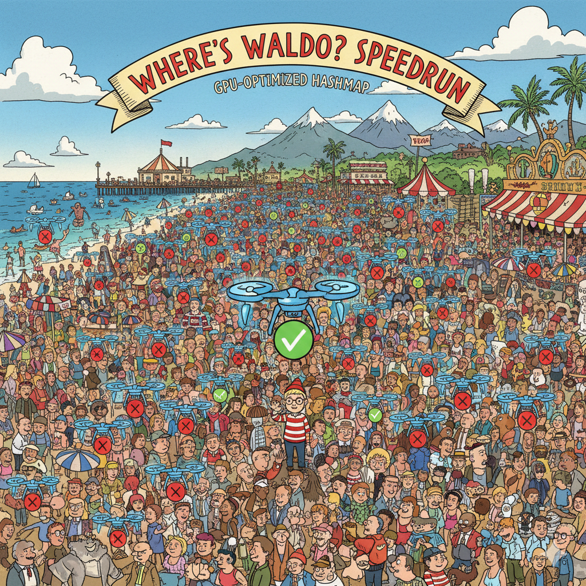

Cuda Static Map Rust: Building a GPU Hash Map from Scratch 1/x
From Rust type system alignment hacks to GPU vectorisation: laying the foundation for GPU hashing

The Goal
We're building: a statically-sized hash map that runs entirely on CUDA-enabled GPUs, written in Rust. Think of it as Rust's HashMap with the following constraints:
- Supports bulk operations: Insert, find, or check containment for thousands of keys in parallel
- Uses open addressing: Like cuCollections, we'll use probing schemes (linear probing, double hashing) to handle collisions
- Has static capacity: The map size is fixed at creation time, trading flexibility for performance
- Works with small types: Keys and values must be ≤ 8 bytes each (a constraint we inherit from CUDA's memory model)
This is the first in a series of blog posts documenting the journey. Today, we'll cover the foundation: understanding the goal, surviving the dependency nightmare, setting up a dual-target build system, and implementing the core building blocks.
Dependency Nightmare
Every Rust GPU project starts the same way: "How do I even compile Rust code for the GPU?" The answer, unfortunately, is not as simple as adding #[target = "nvptx64-nvidia-cuda"] to your Cargo.toml.
The Rust CUDA ecosystem is still in its early days. The old cuda_builder crate on crates.io? Last updated 4 years ago. The Rust-CUDA project? For some reason, I decided to not use Docker, and duck my system dependancies instead.
I started by trying to build rustc_codegen_nvvm (the codegen backend that compiles Rust to NVVM IR, which then becomes PTX) from source. This meant installing:
libssl-dev(because of course)libxrandr(wait, why?)- OptiX SDK (specific version, ofc)
- cuDNN SDK (specific version, ofc)
- Specific LLVM versions that may or may not match what rustc expects
- Setting up environment variables like
CUDNN_INCLUDE_DIR,OPTIX_ROOT, andLLVM_CONFIG
After wasting time wrestling with version mismatches and mysterious linker errors, I decided I don't want to fight this battle. Life is too short to debug why libnvvm.so can't find libcudart.so.12 when you're just trying to write a hash map.
I just chickened out (good to have fear sometimes I must say), and just used a docker image instead.
It took me a bit to get the docker environment correctly, but was much better than bricking my system :)
Setting Up the Build System
With the dependency nightmare behind us, we can focus on the fun part: actually building things. But here's the catch: we need to compile our code twice—once for the CPU (host code) and once for the GPU (device code).
The host code runs on your CPU and handles things like:
- Allocating GPU memory
- Launching kernels
- Managing CUDA streams and contexts
The device code runs on the GPU and handles things like:
- Actually inserting key-value pairs
- Probing for empty slots
- Comparing keys
Rust's solution to this is conditional compilation with #[cfg(target_arch = "nvptx64")]. Code marked with this attribute only compiles when targeting the GPU. This lets us write code that works in both contexts:
#[cfg(target_arch = "nvptx64")]
// This code only compiles for GPU
use cuda_std::thread;
#[cfg(not(target_arch = "nvptx64"))]
// This code only compiles for CPU
use cust::memory::DeviceBuffer;
I decided to use xtask: a pattern for build automation in Rust projects. Instead of remembering whether you need SOME_OBSCURE_FLAG cargo build --target nvptx64-nvidia-cuda or SOME_OBSCURE_FLAG2 cargo build, you just run:
cargo xtask build- Build host codecargo xtask build-ptx- Build device code (PTX)cargo xtask build-all- Build everything
Our xtask implementation handles all the complexity:
- Finding the
rustc_codegen_nvvmbackend - Setting up the right
RUSTFLAGSfor PTX compilation - Configuring
LD_LIBRARY_PATHfor CUDA libraries - Building with the right target triple (
nvptx64-nvidia-cuda)
The project structure is clean and idiomatic:
kernels/- Shared code that compiles for both CPU and GPUsrc/- Host-only code (the public API)xtask/- Build automation
This separation lets us write code once and have it work in both contexts, which is exactly what we need for a hash map that needs to be usable from both the CPU (for setup) and the GPU (for operations).
Implementing the Base Building Blocks
With the build system in place, we can start implementing the actual data structures. A hash map needs three fundamental pieces:
- Pair: A key-value pair that can be stored in GPU memory
- Storage: A buffer that holds all the pairs
- Probing: A strategy for finding empty slots when collisions occur
Let's dive into each one.
Pair: When Alignment Becomes a Type System Puzzle
The Pair type seems simple enough—it's just a key and a value, right? But GPU memory has alignment requirements, and we need our pairs to be aligned correctly for optimal performance. In C++, this is straightforward:
template<typename First, typename Second>
constexpr size_t get_alignment() {
return std::min(16, std::bit_ceil(sizeof(First) + sizeof(Second)));
}
struct alignas(get_alignment<First, Second>()) pair {
First first;
Second second;
};
Rust, however, has a problem: #[repr(align())] requires a literal value, not a computed one. You can't do #[repr(align(compute_alignment()))]—the compiler will reject it.
This is where Rust's type system gets interesting. After receiving help from some lovely folk at the Rust Forum, I figured we can't use computed values in attributes, but we can use types. The solution? Map alignment values to types, then use those types to enforce alignment.
Here's how it works:
#![feature(generic_const_exprs)]
#![allow(incomplete_features)]
/// Computes the alignment for a pair type.
pub const fn alignment<First, Second>() -> usize {
let x = (size_of::<First>() + size_of::<Second>()).next_power_of_two();
// Const-compatible min: if x > 16, return 16, else return x
if x > 16 { 16 } else { x }
}
/// Trait for mapping alignment values to aligned types
pub trait AlignedTo<const ALIGN: usize> {
type Aligned: Clone + Copy + core::fmt::Debug + cust_core::DeviceCopy;
}
/// Type alias to get the aligned type for a given alignment value
pub type Aligned<const ALIGN: usize> = <() as AlignedTo<ALIGN>>::Aligned;
/// Macro to generate `AlignedTo` implementations for specific alignment values
macro_rules! aligned_to {
( $($align:literal),* $(,)? ) => {
$(
const _: () = {
#[repr(align($align))]
#[derive(Clone, Copy, Debug)]
pub struct Aligned;
impl AlignedTo<$align> for () {
type Aligned = Aligned;
}
unsafe impl cust_core::DeviceCopy for Aligned {}
};
)*
}
}
// Generate implementations for all possible alignment values (1, 2, 4, 8, 16, 32)
// The alignment function returns min(16, next_power_of_two(size)), so these cover all cases
aligned_to!(1, 2, 4, 8, 16, 32);
The Magic Explained:
generic_const_exprs: This unstable feature lets us use generic type parameters in constant expressions. Without it, we couldn't computealignment::<First, Second>()at compile time.The Trait System: We create a trait
AlignedTo<const ALIGN: usize>that maps alignment values to types. For each alignment value (1, 2, 4, 8, 16, 32), we generate a zero-sized struct with that alignment using#[repr(align(N))].Fully Qualified Syntax (FQS): The type alias
Aligned<const ALIGN: usize>uses FQS to look up the right aligned type:<() as AlignedTo<ALIGN>>::Aligned. This says "treat()as implementingAlignedTo<ALIGN>, and give me itsAlignedtype."The Zero-Sized Marker: In our
Pairstruct, we include a zero-sized_markerfield with the computed alignment:
pub struct Pair<First, Second>
where
(): AlignedTo<{ alignment::<First, Second>() }>,
{
_marker: Aligned<{ alignment::<First, Second>() }>,
pub first: First,
pub second: Second,
}
Even though _marker takes up no space, Rust requires the struct's alignment to be at least the maximum of all field alignments. So if _marker has alignment 8, the entire Pair must be aligned to at least 8 bytes. It's a beautiful hack that uses the type system to enforce a runtime property (memory alignment) at compile time.
This solution came from the Rust user forum (RIP Stack Overflow for niche Rust questions). It's a perfect example of Rust's type system being flexible enough to work around language limitations, even if it requires some creative thinking.
Storage: Two Paths to Initialization
The Storage type manages a device memory buffer that holds all our key-value pairs. But here's the thing: when you allocate GPU memory, it's uninitialized. We need to fill it with sentinel values (special key-value pairs that mean "this slot is empty").
For small maps, we can just create a vector on the CPU and copy it to the GPU. But for large maps (think millions of slots), that's slow. The better approach? Launch a GPU kernel that initializes all slots in parallel.
Our Storage implementation supports both:
// Option 1: Host-to-device copy (simple, works for small maps)
storage.initialize(sentinel, None)?;
// Option 2: Kernel-based initialization (fast for large maps)
let module = Module::from_ptx(PTX, &[])?;
storage.initialize(sentinel, Some(&module))?;
The kernel-based approach launches thousands of threads, each initializing a chunk of memory. It's the difference between copying 1GB of data from CPU to GPU (slow) versus having 10,000 GPU threads each initialize 100KB in parallel (fast).
Probing: Linear and Double Hashing
When you insert a key into a hash map, you compute its hash and use that to find a slot. But what if that slot is already taken? You need a probing scheme—a strategy for finding the next available slot.
We implemented two classic schemes:
Linear Probing: The simplest approach. If slot h is taken, try h+1, then h+2, and so on, wrapping around when you reach the end. It's efficient for low occupancy but can suffer from clustering (long chains of occupied slots).
Double Hashing: Uses two hash functions. The first determines the starting position, and the second determines the step size. This reduces clustering and is superior for high-occupancy scenarios. The probe sequence looks like: h1(key), h1(key) + h2(key), h1(key) + 2*h2(key), etc.
Both schemes implement a ProbingScheme trait that creates a ProbingIterator—an iterator that generates the sequence of slot indices to check. The iterator handles wrap-around automatically, so the calling code just needs to check each slot until it finds an empty one (or determines the key doesn't exist).
Parallel Linear Probing with Cooperative Groups: Here's where things get interesting. So far, we've been talking about scalar operations—one thread, one slot at a time. But GPUs are all about parallelism, and we can do better.
Imagine you have a cooperative group of cg_size threads working together. Instead of one thread checking one slot, you can have multiple threads check multiple slots in parallel. This is where bucket_size comes in: each thread can handle bucket_size consecutive slots. The total "stride" that a cooperative group covers is stride = bucket_size * cg_size.

Here's how it works: the hash table is conceptually divided into "groups" of size stride. When we hash a key, we compute which group it belongs to: group_index = hash(key) % (capacity / stride). The probe sequence starts at the beginning of that group: init_base = group_index * stride.
Within each group, threads are assigned ranks (0 to cg_size - 1). Each thread starts at its own offset: init = init_base + thread_rank * bucket_size. So if cg_size = 4 and bucket_size = 2, thread 0 checks slots 0-1, thread 1 checks slots 2-3, thread 2 checks slots 4-5, and thread 3 checks slots 6-7—all within the same group.
On each iteration, all threads in the group advance together by stride. This means they jump to the next group and check their assigned slots there. It's like having a synchronized dance where all threads move in lockstep, but each thread is responsible for its own bucket of slots.
What's Next?
We've laid the foundation: a build system that compiles for both CPU and GPU, a Pair type with proper alignment (thanks to some creative type system hacking), a Storage abstraction that can initialize millions of slots efficiently, and probing schemes for handling collisions.
Hopefully soon, we'll put it all together to implement the actual StaticMap type—the public API that users will interact with. We'll cover bulk operations (inserting thousands of keys at once), device-side operations (querying the map from GPU kernels), and the sentinel value system that makes it all work.
Until then, happy hashing! 🦀